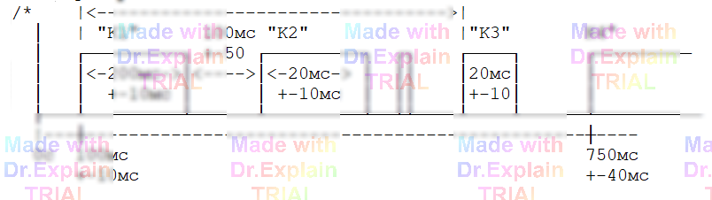
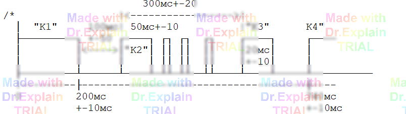

5.2.13 Команда ЦГ — циклограмма
Общие сведения
Команда предназначена для контроля временных характеристик произвольной последовательности импульсов: фиксируются моменты появления передних фронтов и длительности импульсов суммарного сигнала, формируемого на шинах +A1/-B1 под воздействием «запускающей» команды ПТ, ОТ или ГИ.
Сводный формат
МЕТКА ЦГ +ШИНАп,-ШИНАм,Vmax,[<]Tmax[, >Tд][,П>|<Упо][,С<|>Усо][,Н] *NAME1: [привязка] ДО Tп, П>|<Уп, С<|>Ус, Tи *NAME2: … … *
Обязательные общие параметры — шины, диапазон Vmax и время наблюдения Tmax. Остальные (Tд, Упо/Усо, ключ Н) задаются при необходимости.
Рисунки из руководства
Пример 1 (импульсы К1…К4):

Пример 2 (сигналы K1…K4 в кОм):

Ключевые поля фрагмента импульса
-
NAME — идентификатор импульса, используется
для привязок (
^NAME/П,^NAME/С) и сообщений. -
ДО Tп — допуск на момент появления переднего фронта;
допускается
ДО НЕТдля первой «ступеньки». - П>|<Уп, С<|>Ус — уставки, задающие тип/порог переднего и заднего фронтов (положительный — «>», отрицательный — «<»).
- Tи — длительность (закрытый диапазон или ±допуск). Для последней «ступеньки» можно опустить.
Алгоритм
АЦП измеряет сигнал на A1 /B1 с интервалом ≤ Tд (если задан) и отслеживает пересечения уставок для каждого описанного импульса. При ключе Н дополнительно проверяется отсутствие «лишних» импульсов между описанными фрагментами и после последнего фронта.
Протокол ошибок
?ERR 2 "80 ЦГ" Неизв.импульс tн=1.000s tи=10.2ms перед K3 ?ERR 1 "80 ЦГ" K4/С 1.9366s -K4/П 15.3ms не д.быть!